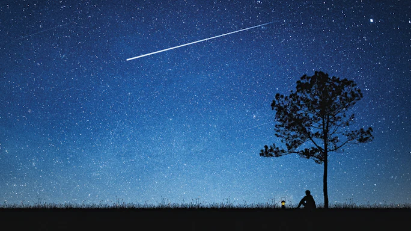

The Night The Stars Fell
The most precious gift you can give a child is to spark their flame of curiosity
One summer night in a seaside cottage, a small boy felt himself lifted from bed. Dazed with sleep, he heard his mother murmur about the lateness of the hour, heard his father laugh. Then, with the swiftness of a dream, he was borne in his father’s arms down the porch steps and out on to the beach.
One summer night in a seaside cottage, a small boy felt himself lifted from bed. Dazed with sleep, he heard his mother murmur about the lateness of the hour, heard his father laugh. Then, with the swiftness of a dream, he was borne in his father’s arms down the porch steps and out on to the beach. Overhead the sky blazed with stars. “Watch!” Incredibly, as his father spoke, one of the stars moved. In a streak of golden fire it flashed across the astonished heavens. And before the wonder of this could fade, another star leapt from its place, then another, plunging towards the restless sea.
What is it?” the child whispered.
Shooting stars. They come every year on a certain night in August. I thought you would like to see the show.”
That was all: just an unexpected glimpse of something haunting and mysterious and beautiful. But, back in bed, the child stared for a long time into the dark, rapt with the knowledge that all around the quiet house, the night was full of the silent music of the falling stars.
by
Ankit